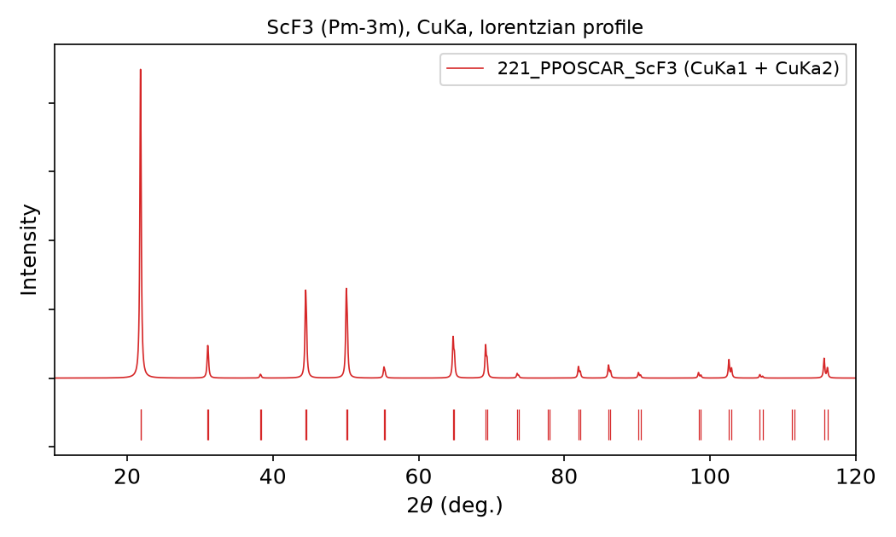

crystod-xrd#
Powder X-ray diffraction patterns: the Bragg peaks of the structure in a
POSCAR, with their Miller indices, multiplicities, d spacings, 2θ positions
and relative intensities, written as a text table and drawn as a broadened
pattern.
I want to … |
command |
|---|---|
compute the pattern for Cu Kα (Kα1 + Kα2) |
|
use a single, monochromatic line |
|
use another anode |
|
draw Gaussian instead of Lorentzian peaks |
|
restrict the angular window |
|
try it without a structure file |
|
36. Powder X-ray diffraction patterns#
Example directory: example/36_xrd_pattern (testsuite section 36)
The intensities are computed with the
XRDCalculator of
pymatgen: atomic scattering factors, the Lorentz-polarization factor and the
multiplicity of each family of planes, for the structure exactly as given in
the POSCAR (no symmetrization, no thermal factors).
crystod-xrd -c example/test_POSCARs/221_PPOSCAR_ScF3
* Structure *
221_PPOSCAR_ScF3: ScF3, Pm-3m
* Radiation *
CuKa: CuKa1 = 1.5405929 A, CuKa2 = 1.5444274 A (Ka1 : Ka2 = 2 : 1)
* Bragg peaks (36) in 10 - 120 deg *
h k l mult d (A) 2theta (deg) intensity line
1 0 0 6 4.069590 21.8217 100.000 CuKa1
1 0 0 6 4.069590 21.8766 50.000 CuKa2
1 1 0 12 2.877635 31.0530 11.215 CuKa1
1 1 0 12 2.877635 31.1322 5.606 CuKa2
...
3 0 0 6 1.356530 69.1999 13.937 CuKa1 + (2 2 1) x24
3 0 0 6 1.356530 69.3968 6.964 CuKa2 + (2 2 1) x24
...
Peak table written to: XRD_221_PPOSCAR_ScF3_CuKa.txt
Pattern (lorentzian profile, width 0.1 deg) written to: XRD_221_PPOSCAR_ScF3_CuKa.pdf
Families of planes with the same d spacing, such as the cubic (3 0 0) and
(2 2 1), contribute to one peak; the first family is listed in the columns
and the others after the line name.


The pattern of ScF3 for the Cu Kα doublet with Lorentzian peaks (the default). The tick marks under the curve are the Bragg positions; the Kα1/Kα2 splitting grows with the angle and is resolved above about 60°.#
The radiation (--xraytype)#
A doublet (CuKa, the default, and AgKa, MoKa, CoKa, FeKa,
CrKa) superposes the Kα1 and Kα2 patterns with the 2:1 intensity ratio of
the two lines. This is what a laboratory diffractometer without a Kα2
monochromator records: every reflection appears twice, the Kα2 partner at half
the intensity and slightly higher angle. A single line gives the
monochromatic pattern. The names are case-insensitive.
name |
wavelength (Å) |
name |
wavelength (Å) |
|---|---|---|---|
|
1.5405929 |
|
1.788996 |
|
1.5444274 |
|
1.792835 |
|
1.392234 |
|
1.936041 |
|
0.70931715 |
|
1.939973 |
|
0.713607 |
|
2.289726 |
|
0.55942178 |
|
2.293651 |
|
0.5638131 |
The wavelengths are those of the RIETAN-FP manual (F. Izumi and K. Momma).
The drawn pattern (--peak-profile, --width)#
Every peak is broadened into a profile of unit area scaled by its intensity, so the integrated intensity of a peak does not depend on the profile:
lorentzian(default):(w/π) / ((2θ − 2θ₀)² + w²),wthe half width at half maximum;gaussian:exp(−(2θ − 2θ₀)² / 2w²) / (w √(2π)),wthe standard deviation.
--width sets w in degrees (default 0.1). The profile only shapes the
figure; the peak table is the same for both.
Outputs and other options#
option |
effect |
|---|---|
|
the window of the peak list and the plot (default 10 120) |
|
drop reflections weaker than this (default 0: every reflection is kept, including the very weak ones pymatgen would hide below 0.1 %) |
|
write |
|
also open the pattern in a matplotlib window |
|
symmetry tolerance of the printed space-group symbol (default 0.01 Å) |
The text table is comma-separated, one reflection per line:
h, k, l, multiplicity, d, two_theta, intensity, line, families, with the
structure, the radiation and the wavelengths in the header.
From Python#
from crystod import xrd
structure = xrd.load_structure("POSCAR")
pattern = xrd.compute_xrd_pattern(structure, "CuKa", (10, 120))
for peak in pattern.peaks[:4]:
print(peak.hkl, round(peak.two_theta, 3), round(peak.intensity, 2), peak.line)
two_theta, intensity = xrd.smear_pattern(pattern, "lorentzian", width=0.1)
The full list of functions is on the crystod.xrd page of the API reference.
Citation
The intensities come from pymatgen: S. P. Ong et al., “Python Materials Genomics (pymatgen): A robust, open-source python library for materials analysis”, Comput. Mater. Sci. 68, 314-319 (2013).